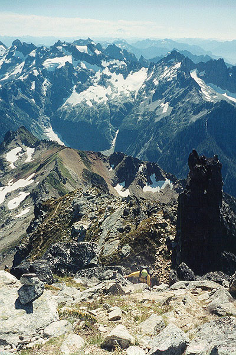
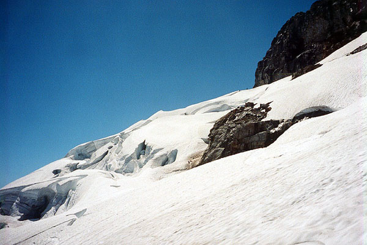
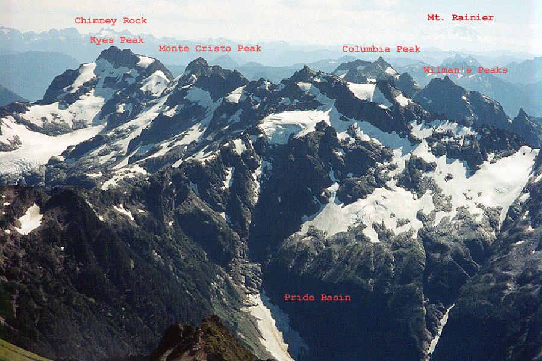
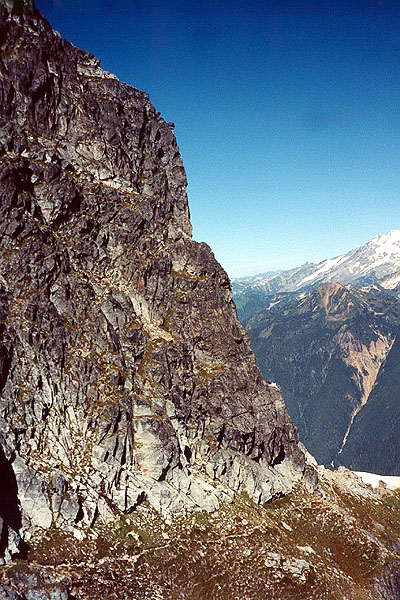

Sloan Peak
- Sloan Peak
- Corkscrew Route
- August 25, 2001
Phil Fortier and I each had a day available to do something in the mountains. The weather forecast was good, and after thinking about several options we decided to go for Sloan Peak. The West Face route was definitely on my mind, but after a halfhearted attempt last year that just resulted in a good brush soaking, I was more interested in doing something with a better chance of success. We agreed that the North Ridge would provide interesting climbing, and we could descend the Corkscrew Route.




A rather hungover Phil picked me up around o’dark thirty, and we drove to the trailhead. Phil has some great ideas about climbing in the Coast Range, and this was really neat to hear about. I told him I haven’t upgraded to Windows XP yet at work, and with some menace he replied “you’d better!” Of course I did so right away, and have been pleased with the new shell functionality he added. We brought an 8.5 mm rope, a sparse collection of rock gear, a few ice screws for the glacier, and crampons. Setting off confidently, we at once decided to delay our climb in favor of an impromptu orienteering course. We performed a depth-first search on all flagged (and unflagged) trails leading to the river. To increase the challenge, we started with the least-likely trail, and worked the course perfectly such that the correct trail to the river crossing was the last one we visited. Satisfied with an hour well spent, we easily crossed the river and continued on rough but easily kept trail.
Long did we wander in mossy, humid forest. A dozen waterfalls, blowdowns, and mud-holes attempted to entertain us, though we only grew wearier. Our language took on a “we’ll see when we get up there” tone. But after a long rest and a drink, we popped out of the jungle into an open meadow with a rockfield. We could see cliffs and snow up high. Invigorated, we promptly lost the trail and tackled the rockfield, which steepened at the top and provided difficult tree and moss climbing for the final 30 feet. But we found a trail again on a ridge, crossed a creek, and hiked up a steep ridge between two gorges. We were making for my high point of a 1998 hike where I reached a viewpoint of the glacier right below the great wall of the mountain. This led us out of the gorge and onto a mile of stunning granite slabs. We traveled quickly through here, admiring the near and far views. Reaching a snowfield I recognized, we applied lightweight crampons (a special gift Kris got for me from Jim Nelson’s climbing shop), and crunched up. There were a few crevasses to avoid. Back onto rock, we hiked to a viewpoint of the glacier, which looked doable. We had seen one report which described it’s condition as similar to the Khumbu Icefall on Mt. Everest. This may have been an exaggeration, for although the glacier was more crevassed and dramatic than you would expect, there was a wide ramp as far as we could see. Another party was a few hundred feet ahead, making some tracks.
The approach had tired us out, but we decided to look at the North Ridge. We hiked to an obvious saddle, and looked at the lower portion of the route. Beckey describes a traverse on the right side of the ridge, then going up a very dubious looking rusty red crumblefest. Neither of us could picture ourselves having fun over there, so we thought about climbing on the crest. This looked very inviting for a while, but there was a sheer, steep tower near the crumblefest that we doubted we could do with the meager equipment we had. We supposed it might be possible to traverse it on the other side.
At this prognosis, any drive I had for this route faded away. I just wanted to go to the summit and sit in the sun, suddenly transforming into a simpler creature. Phil may have felt similar, although he led an energetic traverse around the corner where we didn’t receive enlightenment. Okay, Corkscrew Route it is!
Back on the glacier, we walked easily, following tracks into more crevassed terrain. Soon, we had ice caves, arches, bridges and ramps to look at. The easiest way from here led us in a long, gentle “S” up to a steep, 40 degree wall and another ramp on the other side. We hiked up to the rock wall from here, and walked to a shoulder in the sun. The other party was here, getting ready to go down. We left some gear, and set off on the beautiful Corkscrew Trail, bobbing along on heather and rock, with cliffs above and below. It was worth lingering here, to admire the views. The trail turned upward with some scrambling, and continued to the summit ridge, where brilliant scrambling led us to the summit right on and below the crest.
We found comfortable positions suitable for gawking at the Monte Cristo peaks, and had some lunch. I thumbed through the summit register, which was full of happy pronouncements. We didn’t see any winter entries. We read about some West Face climbs, and later heard that a BOEALPS group had climbed the West Face that day. But what really interested us were the routes on clean granite at the shoulder where glacier and trail meet. With some rock shoes, that would be a great afternoon! Finally, it was time to go, and we reluctantly began the descent, soon finding ourselves near our gear, staring up at the granite lines for some future visit.
Phil had espied a more direct way down the glacier, and we took this successfully, making a beeline for the slabs to the northeast. There were a few exposed moves above a yawning crevasse, but the snow was good, and we were soon removing crampons and hiking down to a saddle. A few camps were being set up here, and we talked to some fellow Pilgrims. Following steep trail down from a ridge, we reached the point above the rockfield, and continued down on steep trail. This was much easier than our way in the morning. Now began a long, silent corridor of weary travel, ever down in the jungle. Phil turned on the afterburners and I woke up from a half-sleep trying to keep up with him. At the river crossing, both of Phil’s sandals came off, and he tottered in the frigid water trying to replace them. I wailed about the cold for a while, then we set off for the final 1/2 mile. Again, we explored the jungle leisurely, until the truck appeared in the darkness.
Many thanks to Phil for a great day out. Perhaps these Coast Range peaks will tempt me one day too!